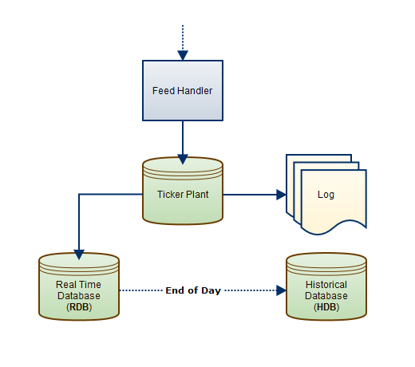
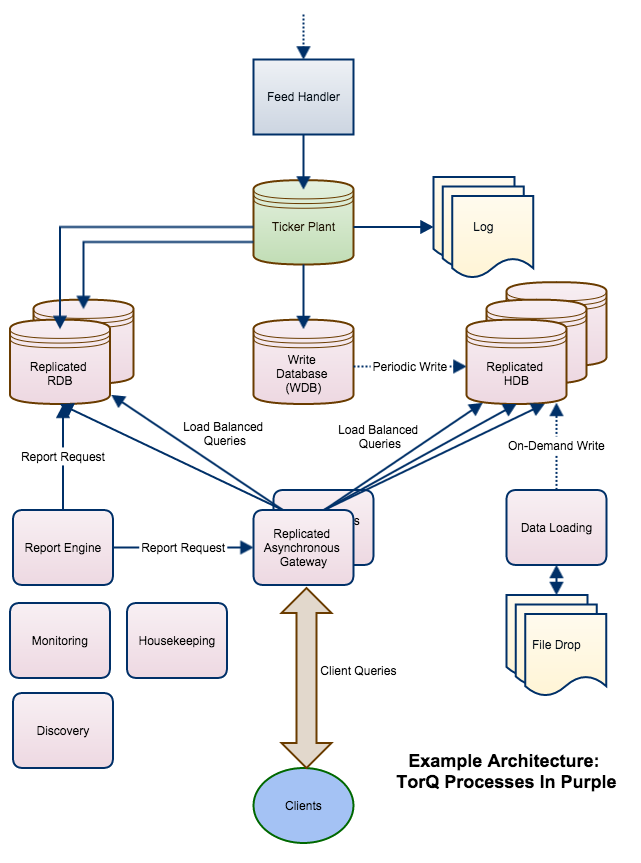

Overview
What is kdb+?
kdb+ is the market leading timeseries database from Kx Systems. kdb+ is used predominently in the Financial Services sector to capture, process and analyse billions of records on a daily basis, with Kx counting almost all of the top tier investment banks as customers. kdb+ incorporates a programming language, q, which is known for its performance and expressive power. Given the unsurpassed data management and analytical capabilities of kdb+, the applicability of kdb+ technology extends beyond the financial domain into any sector where rapid pre-built or adhoc analysis of large datasets is required. Other sectors which have good use cases for kdb+ include utilities, pharmaceuticals, telecoms, manufacturing, retail and any sector utilising telemetry or sensor data.
What is Data Intellect TorQ?
Data Intellect TorQ is a framework which forms the basis of a production kdb+ system by implementing some core functionality and utilities on top of kdb+, allowing developers to concentrate on the application business logic. We have incorporated as many best practices as possible, with particular focus on performance, process management, diagnostic information, maintainability and extensibility. We have kept the code as readable as possible using descriptive comments, error messages, function names and variable names. Wherever possible, we have tried to avoid re-inventing the wheel and instead have used contributed code from code.kx.com (either directly or modified). All code sections taken from code.kx.com are referenced in this document.
Data Intellect TorQ can be extended or modified as required. We have chosen some default behaviour, but it can all be overridden. The features of Data Intellect TorQ are:
-
Process Management: Each process is given a type and name, and can optionally be given a parent type. By default these are used to determine the code base it loads, the configuration loaded, log file naming and how it reports itself to discovery services. Whenever possible we have tried to ensure that all default behaviour can be overridden at the process type level, and further at the process name level.
-
Code Management: Processes can optionally load common or process type/name specific code bases. All code loading is error trapped.
-
Configuration Management: Configuration scripts can be loaded as standard and with specific process type/name configuration overriding default values. Configuration scripts are loaded in a specific order; default, then parent process type specific (optional), process type specific, then process name specific. Values loaded last will override values loaded previously.
-
Usage Logging: All process usage is logged to a single text log file and periodically rolled. Logging includes opening/closing of connections, synchronous and asynchronous queries and functions executed on the timer. Logged values include the request, the details of where it came from, the time it was received, the time it took, memory usage before and after, the size of the result set, the status and any error message.
-
Incoming and Outgoing Connection Management: Incoming (client) and outgoing (server) connections are stored and their usage monitored through query counts and total data size counts. Connections are stored and retrieved and can be set to automatically be re-opened as required. The password used for outgoing connections can be overridden at default, parent process type (optional), process type and process name level.
-
Access Controls: Basic access controls are provided, and could be extended. These apply restrictions on the IP addresses of remote connections, the users who can access the process, and the functions that each user can execute. A similar hierarchical approach is used for access control management as for configuration management.
-
Timer Extensions: Mechanism to allow multiple functions to be added to the timer either on a repeating or one-off basis. Multiple re-scheduling algorithms supplied for repeating timers.
-
Standard Out/Error Logging: Functions to print formatted messages to standard out and error. Hooks are provided to extend these as required, e.g. publication to centralised logging database. Standard out and error are redirected to appropriately named, timestamped and aliased log files, which are periodically rolled.
-
Error Handling: Different failure options are supplied in case code fails to load; either exit upon failure, stop at the point of failure or trap and continue.
-
Visualisation: Utilities to ease GUI development using websockets and HTML5.
-
Documentation and Development Tools: Functionality to document the system is built into Data Intellect TorQ, and can be accessed directly from every q session. Developers can extend the documentation as they add new functions. Functionality for searching for functions and variables by name and definition is provided, and for ordering variables by memory usage. The standard help.q from code.kx is also included.
-
Utilities: We intend to build out and add utilities as we find them to be suitably useful and generic. So far we have:
-
Caching: allows a result set cache to be declared and result sets to be stored and retrieved from the cache. Suitable for functions which may be run multiple times with the same parameters, with the underlying data not changing in a short time frame;
-
Timezone Handling: derived from code.kx, allows conversion between timestamps in different timezones;
-
Email: an library to send emails;
-
Async Messaging: allows easy use of advanced async messaging methods such as deferred synchronous communication and async communication using postback functions;
-
Heartbeating: each process can be set to publish heartbeats, and subscribe to and manage heartbeats from other processes in the environment;
-
Data Loading: utility wrapper around .Q.fsn to read a data file from disk, manipulate it and write it out in chunks;
-
Subscriptions: allow processes to dynamically detect and subscribe to datasources;
-
Tickerplant Log File Recovery: recover as many messages as possible from corrupt log files;
-
Database Writing: utility functions for writing to, sorting and parting on disk databases;
-
Compression: allows compression of a database. This can be performed using a set of parameters for the entire database, but also gives the flexibilty of compressing user-specified tables and/or columns of those tables with different parameters if required, and also offers decompression.
-
Data Access API: A streamlined method to retrieve data across a variety of vanilla and exotic processes.
-
Data Intellect TorQ will wrap easily around kdb+tick and therefore around any tickerplant, RDB, HDB or real time processing application. We currently have several customised processes of our own:
-
Discovery Service: Every process has a type, name and set of available attributes, which are used by other processes to connect to it. The Discovery Service is a central point that can be used to find other available processes. Client processes can subscribe to updates from the discovery service as new processes become available- the discovery service will notify its subscribers, which can then use the supplied hook to implement required behavior e.g. connect to the newly available process;
-
Gateway: A fully synchronous and asynchronous gateway is provided.
The gateway will connect to a defined list of process types (can be homogenous or heterogeneous processes) and will route queries across them according to the priority of received requests. The routing algorithms can be easily modified e.g. give priority to user X, or only route queries to processes which exist in the same data centre or geographical region to avoid the WAN (this would entail using the process attributes). The gateway can either return the result to the client back down the same handle, or it can wrap it in a callback function to be invoked on the client;
-
Real Time Database (RDB): A customized version of the kdb+tick RDB, to allow dynamic tickerplant subscriptions, reloading of multiple HDBs using authenticated connections, and customized end-of-day save downs. The RDB, WDB and tickerplant log replay share a common code base to ensure that a save-down modification to a table is applied across each of these processes.
-
Write Database (WDB): The job of a WDB is to write data to disk rather than to serve client queries. WDBs usually write data out periodically throughout the day, and are useful when there is too much data to fit into memory and/or the end of day save operation needs to be speeded up. The concept is based on w.q
-
Tickerplant Log Replay: A process for replaying tickerplant log files to create on-disk data sets. Extended features are provided for only replaying subsets of log files (by message number and/or table name), replaying in chunks, invoking bespoke final behaviour etc.;
-
Reporter: The Reporter Process runs defined reports (q queries or parameterized functions) against specific database or gateways on a schedule. The results are retrieved and processed. Processing can be user defined, or can be a standard operation such as writing the data to disk, or emailing the results to a list of recipients. This can be useful for running system checks or generating management reports.
-
Housekeeping: A process to undertake housekeeping tasks periodically, such as compressing and removing files that are no longer used. Housekeeping looks up a file of instructions and performs maintenance tasks on directories accordingly. Features allow selective file deletion and zipping according to file age, including a search string parameter and the ability to exclude items from the search. The process can be scheduled, or run immediately from the command line and can be extended as required to incorporate more tasks.
-
File Alerter: A process to periodically scan a set of directories and execute a function based on the availability of a file. This is useful where files may arrive to the system during the day and must be acted upon (e.g. files are uploaded to a shared directory by users/clients). The functions to execute are defined by the user and the whole process is driven by a csv file detailing the file to search for, the function to execute and, optionally, a directory to move the file to after it has been processed.
-
Monitor: A basic monitoring process which uses the Discovery Service to locate the other processes within the system, listens for heartbeats, and subscribes for log messages. This should be extended as required but provides a basic central point for system health checks;
-
Kill: A process used to kill other processes, optionally using the Discovery Service to locate them.
A Large Scale Data Processing Platform
One of the key drivers behind TorQ development has been to ensure all the tools necessary to build a large scale data processing platform are available. kdb+tick provides the basic building blocks, and a standard set-up usually looks something like this:

However, in reality it is usually more complicated. A larger scale architecture serving large numbers of client queries and receiving data from multiple sources may look like this:

A common practice is to use a gateway (section gateway) to manage client queries across back-end processes. The gateway can load balance across processes and make failures transparent to the client. If the clients access the gateway with asynchronous calls, then the gateway can serve many requests at once and additionally implement client queuing algorithms.
Other common production features include:
-
A modified version of the RDB (section sec:rdb) which does different operations at end-of-day, reloads multiple HDB processes etc.
-
A Write Database (section [sec:wdb]) which receives data from the tickerplant and periodically writes it to disk. WDBs are used when there is too much data in a day to fit into memory and/or to speed up the end-of-day rollover job
-
Processes that load data from other sources either into the HDB directly or to the RDB potentially via the tickerplant (section [sec:dataloader]). The data may be dropped in specific locations which have to be monitored (section [sec:filealerter])
-
A Reporting Engine (section [sec:reporter]) to run periodic reports and do something with the result (e.g. generate an xls file from the database and email it to senior management). Reporting engines can also be used to run periodic checks of the system
-
A Discovery Service (section [sec:discovery]) to allow processes to locate each other, and to allow processes to dynamically register availability and push notifications around the system.
-
Basic Monitoring (section [sec:monitor]) of process availability
-
Housekeeping (section [sec:housekeeping]) to ensure log files are tidied up, tickerplant log files are compressed/moved in a timely fashion etc.
Do I Really Have to Read This Whole Document?
Hopefully not. The core of Data Intellect TorQ is a script called torq.q and we have tried to make it as descriptive as possible, so perhaps that will suffice. The first place to look will be in the config files, the main one being \$KDBCONFIG/settings/default.q. This should contain a lot of information on what can be modified. There is also a cheatsheet contained within the documentation. In addition:
-
We have added a load of usage information:
aquaq$ q torq.q -usage KDB+ 3.1 2013.10.08 Copyright (C) 1993-2013 Kx Systems General: This script should form the basis of a production kdb+ environment. It can be sourced from other files if required, or used as a launch script before loading other files/directories using either -load or -loaddir flags ... etc ...If sourcing from another script there are hooks to modify and extend the usage information as required.
-
We have some pretty extensive logging:
aquaq$ q torq.q -p 9999 -debug KDB+ 3.1 2013.10.08 Copyright (C) 1993-2013 Kx Systems 2013.11.05D12:22:42.597500000|aquaq|torq.q_3139_9999|INF|init|trap mode (initialisation errors will be caught and thrown, rather than causing an exit) is set to 0 2013.11.05D12:22:42.597545000|aquaq|torq.q_3139_9999|INF|init|stop mode (initialisation errors cause the process loading to stop) is set to 0 2013.11.05D12:22:42.597810000|aquaq|torq.q_3139_9999|INF|init|attempting to read required process parameters proctype,procname from file /torqhome/config/process.csv 2013.11.05D12:22:42.598081000|aquaq|torq.q_3139_9999|INF|init|read in process parameters of proctype=hdb; procname=hdb1 2013.11.05D12:22:42.598950000|aquaq|hdb1|INF|fileload|config file /torqhome/config/default.q found ... etc ... -
We have added functionality to find functions or variables defined in the session, and also to search function definitions.
q).api.f`max name | vartype namespace public descrip .. --------------------| ------------------------------------------------.. maxs | function .q 1 "" .. mmax | function .q 1 "" .. .clients.MAXIDLE | variable .clients 0 "" .. .access.MAXSIZE | variable .access 0 "" .. .cache.maxsize | variable .cache 1 "The maximum size in .. .cache.maxindividual| variable .cache 1 "The maximum size in .. max | primitive 1 "" .. q)first 0!.api.p`.api name | `.api.f vartype | `function namespace| `.api public | 1b descrip | "Find a function/variable/table/view in the current process" params | "[string:search string]" return | "table of matching elements" q).api.p`.api name | vartype namespace public descrip .. ------------| --------------------------------------------------------.. .api.f | function .api 1 "Find a function/variable/tabl.. .api.p | function .api 1 "Find a public function/variab.. .api.u | function .api 1 "Find a non-standard q public .. .api.s | function .api 1 "Search all function definitio.. .api.find | function .api 1 "Generic method for finding fu.. .api.search | function .api 1 "Generic method for searching .. .api.add | function .api 1 "Add a function to the api des.. .api.fullapi| function .api 1 "Return the full function api .. -
We have incorporated help.q.
q)help` adverb | adverbs/operators attributes| data attributes cmdline | command line parameters data | data types define | assign, define, control and debug dotz | .z locale contents errors | error messages save | save/load tables syscmd | system commands temporal | temporal - date & time casts verbs | verbs/functions -
We have separated and commented all of our config:
aquaq$ head config/default.q /- Default configuration - loaded by all processes /- Process initialisation \d .proc loadcommoncode:1b /- whether to load the common code defined at /- ${KDBCODE}/common loadprocesscode:0b /- whether to load the process specific code defined at /- ${KDBCODE}/{process type} loadnamecode:0b /- whether to load the name specific code defined at /- ${KDBCODE}/{name of process} loadhandlers:1b /- whether to load the message handler code defined at /- ${KDBCODE}/handlers logroll:1b /- whether to roll the std out/err logs daily ... etc ...
Operating System and kdb+ Version
Data Intellect TorQ has been built and tested on the linux and OSX operating systems though as far as we are aware there is nothing that would make this incompatible with Solaris or Windows. It has also been tested with kdb+ 3.1 and 2.8. Please report any incompatibilities with other kdb+ versions or operating systems.
License
This code is released under the MIT license.